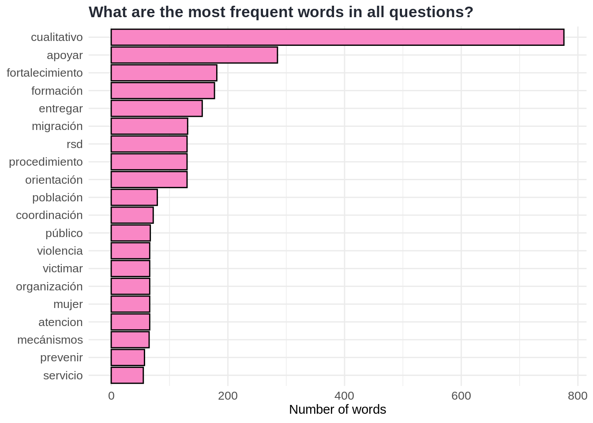

QualMiner
Introduction
I About data
Data in ActivityInfo over time
Data preparation
Technical aspects of the data
II Descriptive statistics
Recode table: shorten sector names
Partners
Partners entering narrative data
Direct and indirect fields
The number of narrative records in form topics
Cantons and provinces entering narrative data
How many individuals are entering data?
III Response quality
Response quality
IV Response quality - Word count
Word count
Distribution of word counts
Median word count of responses per form name
Median word count of responses per partner
Median word count of responses per specific reporting partners
Median word count of responses per partner over months
Median word count of responses per specific reporting partners over months
The Description field
Analysis of Variance
Correlation
The regression lines
Logistic regression
Hypothesis testing
Which sectors do receive high word counts in responses?
How much does the average word count differ between sectors?
V Text mining
Textual data preparation
Most common words
The most common words in all responses
The most common words in all questions
The most common words in all responses per form topic
The key themes (by using term-frequency and tf-idf)
n-grams
Higher order n-grams
Term-frequency matrix
Sentiment analysis
References
Published with bookdown
QualMiner: Text mining for the Venezuelan Humanitarian Response in Ecuador
Most common words
The most common words in all responses
The most common words in all questions
The most common words in all responses per form topic
